Motivation and purposes
Construction of an antibody repertoire is a preliminary step of any immunological analysis based on Rep-seq reads. In the last few years at least three tools were released to address this problem: IgRepertoireConstructor by Safonova et al (2015), MiXCR by Bolotin et al. (2015) and pRESTO by Vander Heiden et al. (2014). However, no conventional quality assessment methodology was proposed yet. Without such methodology we cannot compare tools and determine their limitations.
We developed IgQUAST (ImmunoGlobulin QUality ASsesstment Tool), a tool for benchmarking of full-length adaptive immune repertoire construction tools and quality assessment of adaptive immune repertoires.
IgQUAST has the following features (explained in details in further sections):
- Reference-based and reference-free repertoire quality assessment;
- Overcorrection/undercorrection detection;
- Analysis of antibody abundances;
- Detection of sequencing technology and repertoire construction strategy artifacts.
Quality assessment scenarios
IgQUAST input:
- Initial Rep-seq read library;
- Analyzed adaptive immune repertoire constructed on this library;
- For reference-based analysis, the reference repertoire constructed on the same library.
- Repertoire sequences along with their abundances (the number of reads formed the cluster);
- Map from initial reads to the corresponding clusters (read-to-cluster map, RCM).
Note: IgQUAST benchmarks only the repertoire construction stage. Input reads should be already merged, filtered from contaminations, and cropped by V/J ends.
IgQUAST performs reference-based and reference-free analysis:
- During reference-based analysis the tool compares two input repertoires: the reference repertoire and the constructed repertoire.
The analysis is separated into two scenarios:
- Repertoire-to-repertoire matching only uses repertoire sequences. The tool aligns each of two repertoires against the other one and computes sensitivity and precision metrics, detects error positions in erroneously constructed sequences, and compares reference and constructed abundances for ideally reconstructed sequences.
- Partition-based analysis only uses partitions induced by the RCMs (read-to-cluster maps). The tool compares two partitions and computes partition similarity metrics (like Rand index). Also it computes cluster quality measures (like purity and discordance) and plots their distributions for both input repertoires.
- Reference-free analysis is performed on the constructed repertoire. The tool detects overestimated clusters in the repertoire using amplification-free Poisson model. It also estimates error rate and error profile of the initial read library. The same analysis is performed on the reference repertoire if it is provided. All reference-free analysis requires both repertoire sequences and read-to-cluster map (RCM).
The output IgQUAST is a collection of plots along with numerical statistics that are described below. Brief report is outputted to screen and saved to text log file. All computed metrics along with additional information (e.g. the data to reproduce some of plots) are exported into JSON. Table below summarizes scenarios requirements and results.
| Scenario | Requirements | Resultant output |
| Repertoire-to-repertoire matching | Constructed and reference repertoires in CLUSTER.FA format | Plots: Statistics: |
| Partition-based analysis | Initial input Rep-seq library, RCM files for the reference and the constructed repertoires | Plots: Statistics: |
| Reference-free analysis | Initial input Rep-seq library, constructed repertoire RCM file |
Plots:
|
Certain scenarios are disabled by default since they are time- and memory-consuming. See IgQUAST manual for command line options description.
Reference repertoire
Reference repertoire is obtained either by repertoire simulation or by construction of the repertoire using the barcoding data and running repertoire construction in the blind (ignoring barcodes) mode.
Simulation
There are no special requirements for simulation software or/and simulated repertoire. However, we suggest using our IgSimulator tool that was specially designed for benchmarking adaptive immune repertoire construction strategies.
Molecular barcoding
Molecular identifiers (UMIs) or barcodes can be used for B-cell labeling. Such labeling allows one to reconstruct adaptive immune sequences using consensus by groups and, thus, provides one with a reference dataset for benchmarking.
Please note that currently available barcoding techniques are not perfect. Thus, using naive barcode assembly approach may lead to imprecise reference and biased analysis. The better option is to use a special tool designed for barcode-assisted antibody repertoire construction. We suggest using our BarIgReC tool for this.
Another approach to consider barcoding artifacts is to use specially designed semi-artificial test datasets. Such datasets are obtained by utmost aggressive input read and barcode filtering: all suspicious barcodes and reads are omitted. Such an approach is definitely improper for real-life repertoire construction (a significant part of repertoire diversity is lost), but is appropriate for test dataset preparation.
Cluster abundance threshold
Distribution of antibody abundances is usually highly uneven. Most clusters in a repertoire have small size. Note that consensus computed on a small cluster is unreliable. Additionally, due to the dependence of amplification errors and/or special sequencing errors pattern even larger cluster could be unreliable.
Thus, we have to exclude small clusters from the analysis in order to make results more stable and interpretable. The threshold for reference cluster size (reference min-size) is a parameter of benchmarking procedure. IgQUAST uses 5 as a default value. See the paper for more information about this choice.
At the same time, during real-life repertoire construction one have to choose a threshold for constructed cluster size. Constructed cluster size threshold (constructed min-size) is a parameter of repertoire construction procedure. The selection is tricky since the larger threshold, the less detailed but more trustworthy result. One have to find the optimal (in some sense) threshold value, the concrete optimality criterion depends mostly on the final purpose of the research.
For different repertoire construction strategies optimal (in any sense) threshold values can be different. Due to this reason, IgQUAST computes statistics for various threshold values. However, for good repertoire construction tool that does not underestimate abundances (see the corresponding section for more information about abundance estimation) we can expect that optimal constructed min-size is equal or close to the reference min-size.
Repertoire-to-repertoire matching
Let us describe the provided comparison between reference and constructed repertoire in terms of their sequences.
Constructed-to-reference and reference-to-constructed distance distributions
For each sequence in the constructed repertoire IgQUAST finds the closest sequence in the reference repertoire and constructs histogram of distances. It also constructs the same histogram by mapping the reference repertoire to the constructed one.
IgQUAST constructs these histograms for different constructed min-size values (1, 3, 5, 10) and for fixed reference min-size (5 by default).
| 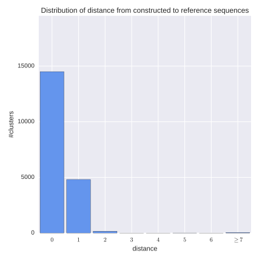 |

|
|
Reference-to-constructed distance distribution; reference min-size = constructed min-size = 5. |
Reference-to-constructed (sensitivity) and constructed-to-reference (precision) distance distributions; reference min-size = 5 and various constructed min-sizes. |
Note: one should necessarily inspect plots for different min-size values, since small clusters are probably imperfect and should be excluded from the analysis. However, the paramount pair of plots is the third one where constructed min-size = reference min_size. For a good repertoire construction tool we expect optimal constructed min-size to be close to reference min-size.
Plots above suggest that approx. 20% of repertoire sequences possess one error. We will investigate them in greater detail in the next section.
Reported statistics
Extra cluster is a cluster from the constructed repertoire with size more or equal to constructed min size having not enough abundance (less than reference min-size or not presented) in the reference repertoire. IgQUAST group such extra clusters by their reference abundance (if cluster is not presented in the reference repertoire at all, define its reference abundance as zero) and reports the frequencies. This diagnostic allows one to estimate the impact of correctly reconstructed sequences with overestimated abundance.
For the example above the frequencies are the following:
Extra clusters with size == 4: 57
Extra clusters with size == 3: 63
Extra clusters with size == 2: 36
Extra clusters with size == 1: 75
Extra clusters with size == 0: 4784
That means only a small part of extra clusters are real reference clusters with overestimated size.
Other are just erroneous.
Error position distribution
For “almost correct” (matched with only one error, i.e. corresponded to the second red bar in the left figure above) constructed clusters IgQUAST plots error-position distribution (error profile). For this analysis IgQUAST uses constructed min-size equal to the reference min-size, that is 5 by default.
Such analysis can reveal sequencing technology or repertoire construction strategy artifacts.

|

|
|
Error position distribution for “almost correct” constructed sequences. Errors are concentrated in FR4 region. |
After FR4 correction errors are evenly distributed. |
Plot above reveals that errors are mostly concentrated in FR4. Additional analysis shows the key reason for this is extremely high error rate at the end of reads for the considered Rep-seq library. Fortunately, it could be easily fixed using V/D/J gene germline (e.g. IMGT) database. FR4 is a conservative region and we hopefully do not miss any variations.
Our alignment tool VJFinder automatically fixes FR1 and FR4 during Rep-seq reads alignment. Thus, such artifacts is not an issue for IgReC.
Sensitivity and precision
For one predefined reference min-size value (5 by default) and various constructed min-size values IgQUAST finds ideally reconstructed (i.e. matched without errors) clusters and compute the following metrics:
- Precision — rate of ideal clusters among constructed clusters. This is a measure of repertoire clearness. The larger the precision metric, the less the number of false constructed clusters.
- Sensitivity — rate of ideal clusters among reference clusters. This is a measure of repertoire representativity. The larger the sensitivity metric, the more correct clusters were reconstructed.
| 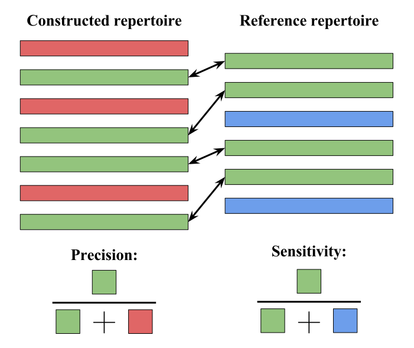 |

|
| Sensitivity and precision definition. | Composition of sensitivity-precision plots for three different repertoire construction tools. |
The larger constructed min-size, the less sensitivity (since constructed repertoire is shrinking), and typically the more precision (since larger clusters are more reliable). Therefore, selection of constructed min-size is a trade-off between sensitivity and precision.
Sensitivity-precision curve (similar to ROC-curve) depicted above helps one to compare different tools. For example above IgReC (blue curve) dominates for all reasonable threshold values. Consequently, IgReC is the best option in this particular case.
Reported statistics
IgQUAST reports:- sensitivity and precision for constructed min-size equal to reference min-size and for optimal (in terms of sum of sensitivity and precision) constructed min-size value along with the value itself;
- area under sensitivity-precision curve that can be used is numeric one-value quality metric;
Abundance distributions
Repertoire clusters are also characterized by their abundances, i.e., cluster sizes. IgReC plots superposed abundance histograms.
| 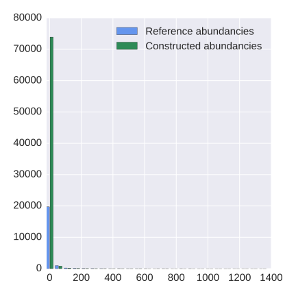 | 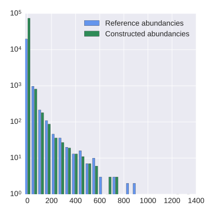 |
| Distributions of abundances for both input repertoires. | The same plot in logarithmic scale. |
Note that the histograms are more informative in log-scale due to high unevenness of antibody abundance distribution.
The plots above reveal that the constructed repertoire contains about 4 times more small clusters. A repertoire construction tool often fails to fix highly corrupted reads and such reads typically become singletons. Thus, the most part of small clusters have size 1.
Cluster abundances scatterplot
Repertoire clusters are also characterized by their abundances. For clusters presented in both constructed and reference repertoires (so-called ideal clusters), IgQUAST compares abundances.
A repertoire construction tool often fails to fix highly corrupted reads and such reads typically become singletons. Therefore, abundances of corresponding clusters are commonly underestimated.
According to our experiments, the dependence between reference and constructed cluster size is almost linear. The linear coefficient depends on error rate and repertoire construction strategy. We can use this coefficient to compare different repertoire construction tools.
For certain clusters constructed abundance is much higher than the reference abundance. We suppose that such clusters are overcorrected, i.e., erroneously glued with other (probably smaller) clusters. Thus, their abundance is overestimated. The plot depicts potentially overcorrected clusters by red points, while other clusters are shown by blue ones.
| 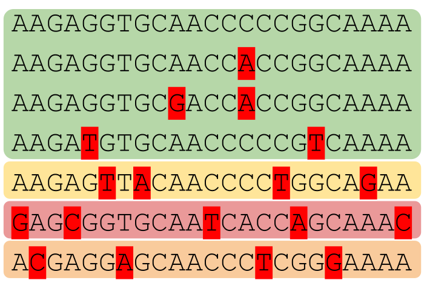 | 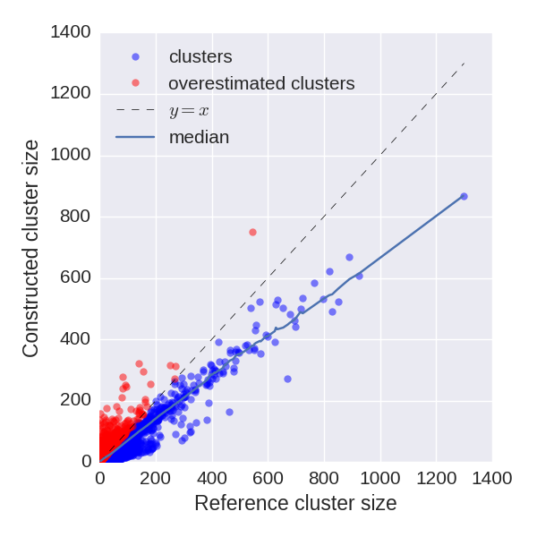 |
| Repertoire construction tool cannot fix highly corrupted reads. Therefore, cluster abundances are typically underestimated. | Cluster abundances scatterplot for poorly constructed repertoire. Abundances are highly underestimated; also a lot of overcorrected (red) clusters. |
Reported statistics
IgQUAST reports median abundance rate (the median of abundances rates) — an estimation of abundance underestimation coefficient. This metric can be used for repertoire construction tools benchmarking.Partition-based analysis
Let us describe the provided comparison between reference and constructed repertoire in terms of their clustering partitions. That includes conventional clustering similarity measures and distributions of cluster purity and discordance.
Clustering similarity measures
IgQUAST reports:
- Jaccard index,
- Fowlkes-Mallows index,
- Rand index,
- adjusted Rand index.
Cluster purity and discordance distributions
For each constucted cluster C IgQUAST computes purity and discordance — the rate of the first and second most presented reference cluster in C respectively (see the figure below). Symmetrically we define purity and discordance for reference clusters.
Constructed purity and discordance are the measures of the cluster overcorrection. If the constructed cluster is impure then it is probably combined from several erroneously joined reference clusters.
Reference purity and discordance are measures of the cluster undercorrection. If the reference cluster is impure then it is probably erroneously split into several constructed clusters.
| 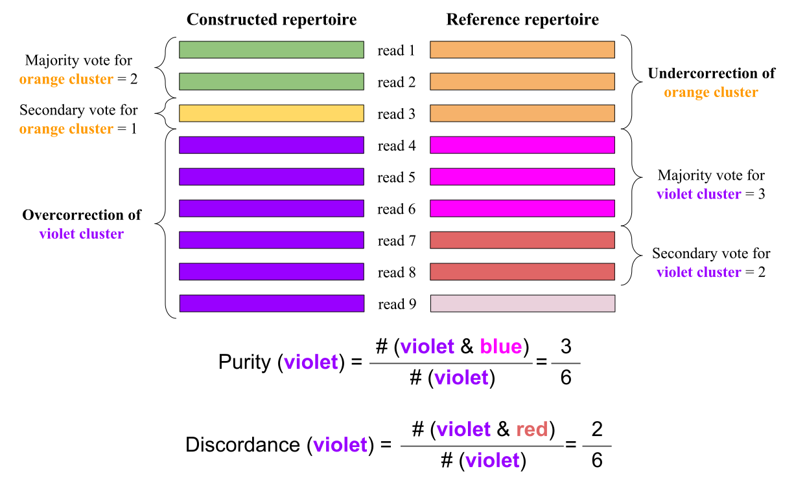 |
| Purity and discordance definition for reference and constructed clusters. Reads 7 and 8 (red) are called discordant for the constructed repertoire, since they vote for the second popular cluster. |
IgQUAST plots histograms of purity and discordance distributions for reference and constructed clusters. As already discussed above, small clusters should be excluded from analysis. Thus, IgQUAST also plots histograms considering large (>= 5 by default) clusters only.
Plots below demonstrate the difference between poorly constructed and accurate repertoires.
| 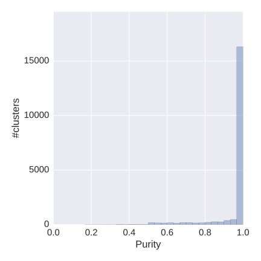 | 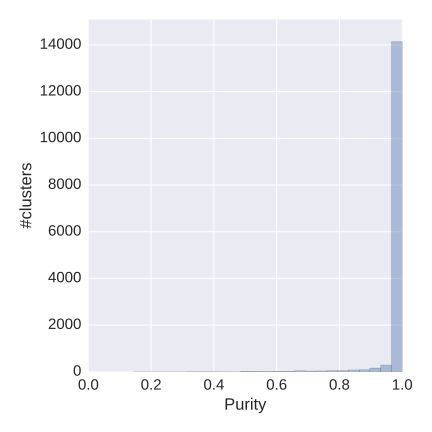 |
| Distribution of purity for large (>= 5) reference clusters for poorly constructed (left) and accurate (right) repertoire. Left repertoire contain more pure clusters, but also more impure ones. | |
Note: even if a constructed cluster is pure it does not necessarily imply that the cluster is correct. A pure cluster may be an erroneously separated part of a bigger cluster. We have to control both reference and construction purity.
| 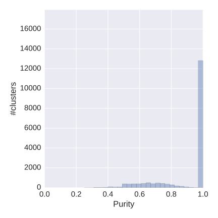 | 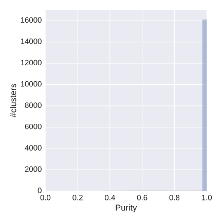 |
| Distribution of purity of large (>= 5) reference clusters for poorly constructed (left) and accurate (right) repertoire. Left repertoire is undercorrected: there are a lot of impure reference clusters, i.e., clusters that is erroneously split. | |
Reported statistics
IgQUAST exports the number of pure/impure reference and constructed clusters (purity threshold is 95%) along with the number of discordant reads in for the reference and the constructed repertoires.
Reference-free analysis
Reference-free analysis allows one to estimate quality of the constructed repertoire and the input library. In case of reference repertoire is provided, the same analysis is performed to it.
Distribution of #errors in reads. Error-rate estimation
For each initial read corresponding to large cluster (>=5 by default) IgQUAST computes the number of corrected errors as the Hamming distance from the corresponding repertoire sequence. Then it constructs histogram and estimates error rate (average number of sequencings errors per read) in Poisson amplification-free model. The histogram is plotted along with a histogram of Poisson distribution with parameter equal to the estimated error rate.
| 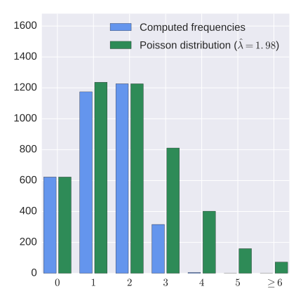 | 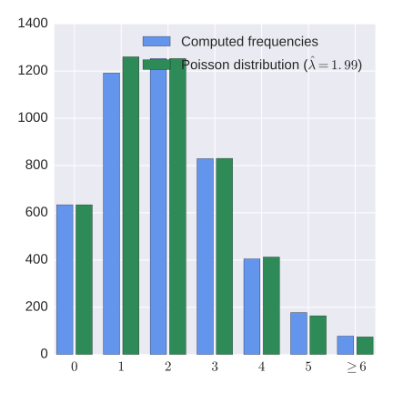 |
| Distribution of #errors in reads for the constructed (left) and the reference (right) repertoire for simulated Rep-seq dataset. The actual error rate is 2. | |
Example above suggests that for the constructed repertoire the distribution is far from Poisson (the tail is cut). The reason is that repertoire construction algorithm commonly fails to fix highly corrupted reads, therefore, high distances are improbable. At the same time, error rate is estimated correctly (the actual value is 2).
For the reference repertoire distance distribution is almost perfect Poisson since the data was simulated according to Poisson model, i.e. we suppose that sequencing errors are (1) rare and (2) independent. Note that in case of intensive amplification (2) may be not fulfilled.
Reported statistics
IgQUAST reports the estimated error rate. Note that the estimation is reliable only if the repertoire is constructed properly. Therefore, using reference repertoire provides more adequate estimation.
Error and discordance profiles
For each large cluster (>=5 by default) for each sequence position IgQUAST computes consensus and finds quantity of the most popular letter and quantity of the second popular letter. Then, for each position it computes error rate (one minus the rate of the most popular letters) and discordance (the rate of second popular letter). IgQUAST plots error rate and discordance profiles, that help to detect overcorrection. Erroneously joined similar clusters provide peaks at the plot on the positions, where cluster sequences are different (see the example below).
| 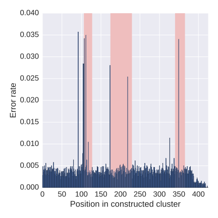 | 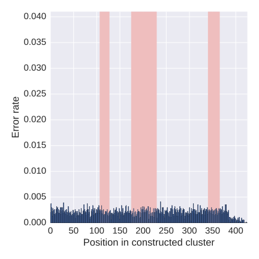 |
| Error profiles for repertoires constructed by IgReC in aggressive mode (left) and default mode (right). Left repertoire is overcorrected. Peaks on the left plot correspond to positions with differences. | |
| 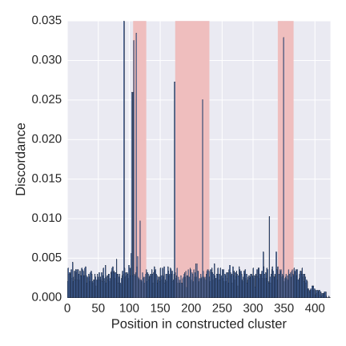 | 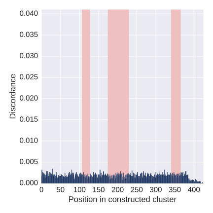 |
| Discordance profiles for the same repertoires. Discordance profiles demonstrates the same behavior as error profiles. At the time, discordance may be more informative in case if one wants two separate TWO close clusters. | |
IgQUAST also constructs profiles for 5 largest clusters separately, since in overcorrected repertoire largest clusters are often a union of several reference clusters.
Note: for highly accurate (or reference) repertoire error profile is an estimation of sequencing error profile of the Rep-seq library.
Scatterplot of max error over position against cluster size
For each cluster IgQUAST constructs error profile (as described in the previous section) and finds the position with maximal error. Then IgQUAST constructs scatterplot of the maximal number of errors over position against cluster size. Clusters with relatively large maximal number of errors are untrustworthy (shown by red points).

|
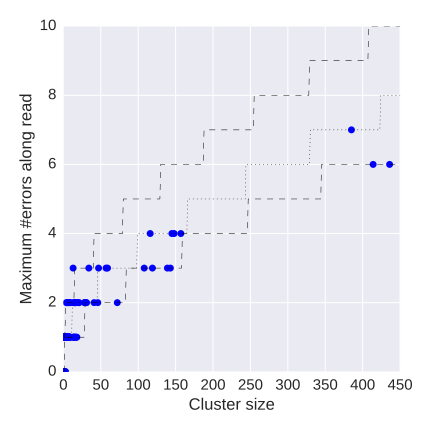 |
| Scatterplots of maximal error position along sequence against cluster size for repertoires constructed by IgReC in aggressive (left) and default (right) mode. Red points correspond to potentially overcorrected clusters with extremely high number of errors in one position. Dashed lines show 95% confidence interval in Poisson amplification-free model. | |
IDs of potentially overcorrected clusters are exported into JSON report file. Note that Poisson model may be imprecise in case of intensive amplification. The proper model taking amplification into account is being developed now.
Feedback and bug reports
Your comments, bug reports, and suggestions are very welcome. They will help us to further improve IgQUAST.If you have any trouble running IgQUAST, please provide us the log file from the output directory.
Address for communications: igtools_support@googlegroups.com.
Manuals and citations
Manuals
IgQUAST manual can be found here.Citations
Alexander Shlemov, Sergey Bankevich, Andrey Bzikadze, Dmitriy M. Chudakov, Yana Safonova, and Pavel A. Pevzner. Reconstructing antibody repertoires from error-prone immunosequencing datasets (submitted)